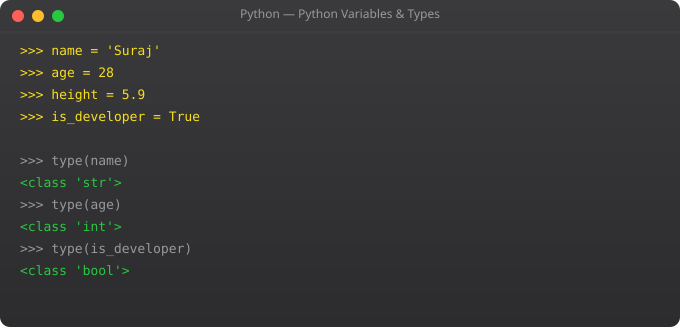

Python is dynamically typed -- you do not declare what type a variable holds. Write x = 5 and Python knows x is an integer. Write x = "hello" and Python knows it is a string. This convenience is real, but understanding Python's type system deeply is still essential. Type mismatches cause bugs, and knowing when to use a list versus a set versus a dict is what separates beginner Python from professional Python.
I remember my first week with Python, using a list everywhere because it was the first data structure I learned. Then I had a loop checking if item in my_list on a list of 50,000 items and wondering why the script was slow. Switching that list to a set reduced that particular operation from O(n) to O(1) -- the script went from 45 seconds to under 2 seconds. Understanding data types matters.
age = 25 # int -- whole numbers, no limit in Python
price = 19.99 # float -- decimal numbers
large = 1_000_000 # Underscores improve readability
print(type(age)) # <class 'int'>
print(type(price)) # <class 'float'>
print(isinstance(age, int)) # True
# Arithmetic
print(17 // 5) # 3 -- floor division (integer result)
print(17 % 5) # 2 -- modulo (remainder after division)
print(2 ** 10) # 1024 -- exponentiation
# Floating point precision gotcha
print(0.1 + 0.2) # 0.30000000000000004 (floating point!)
from decimal import Decimal
print(Decimal('0.1') + Decimal('0.2')) # 0.3 (exact decimal)Strings in Python are immutable sequences of Unicode characters. Python has an extraordinarily rich set of string methods.
name = "Suraj Ahir"
# Common methods
print(name.upper()) # SURAJ AHIR
print(name.lower()) # suraj ahir
print(name.title()) # Suraj Ahir (capitalise each word)
print(name.replace("Suraj", "Raj")) # Raj Ahir
print(name.split(" ")) # ['Suraj', 'Ahir']
print(len(name)) # 10
print(name.strip()) # remove leading/trailing whitespace
print(name.startswith("Sur")) # True
print("Ahir" in name) # True
# Indexing and slicing
print(name[0]) # S (first character)
print(name[-1]) # r (last character)
print(name[0:5]) # Suraj (slice)
print(name[::-1]) # rihA jaruS (reversed)
# f-strings (Python 3.6+ -- use these)
score = 98.567
print(f"Name: {name}, Score: {score:.2f}") # 2 decimal places
print(f"Price: Rs.{1234567.89:,.2f}") # 1,234,567.89 with commas
print(f"Percentage: {0.856:.1%}") # 85.6%skills = ["Python", "Docker", "Kubernetes", "AWS"]
# Modify the list
skills.append("Linux") # Add to end: O(1)
skills.insert(1, "Git") # Add at index: O(n)
skills.remove("Docker") # Remove by value: O(n)
last = skills.pop() # Remove and return last: O(1)
skills.pop(0) # Remove and return first: O(n)
# Useful methods
print(len(skills))
print(skills.count("Python")) # How many times "Python" appears
print(skills.index("AWS")) # Index of first occurrence
# Sorting
skills.sort() # Sort in-place (modifies original)
skills.sort(reverse=True) # Descending
sorted_copy = sorted(skills) # Return new sorted list (original unchanged)
# Slicing
print(skills[1:3]) # Elements at index 1 and 2
print(skills[:2]) # First two elements
print(skills[::2]) # Every other element
# List comprehension -- powerful Pythonic pattern
numbers = list(range(1, 11))
evens = [n for n in numbers if n % 2 == 0]
squares = [n**2 for n in numbers]
print(evens) # [2, 4, 6, 8, 10]
print(squares) # [1, 4, 9, 16, 25, 36, 49, 64, 81, 100]person = {
"name": "Suraj",
"age": 25,
"skills": ["Python", "Docker"],
"city": "Mumbai"
}
# Access values
print(person["name"]) # Suraj (KeyError if missing)
print(person.get("age")) # 25 (None if missing)
print(person.get("salary", 0)) # 0 (default value if missing)
# Modify
person["age"] = 26
person["language"] = "Hindi" # Add new key
# Iterate
for key, value in person.items():
print(f" {key}: {value}")
for key in person.keys():
print(key)
# Check membership
print("name" in person) # True
# Dictionary comprehension
squares_dict = {n: n**2 for n in range(1, 6)}
# {1: 1, 2: 4, 3: 9, 4: 16, 5: 25}# Tuples -- ordered, immutable
coordinates = (28.6139, 77.2090) # Delhi lat/lng
lat, lng = coordinates # Tuple unpacking
print(f"Latitude: {lat}")
rgb = (255, 128, 0) # Orange colour -- should never change
# rgb[0] = 200 # TypeError: tuples do not support assignment
# Multiple return values from functions use tuples
def min_max(numbers):
return min(numbers), max(numbers)
lo, hi = min_max([3, 1, 4, 1, 5, 9, 2, 6])
# Sets -- unordered, unique values
tags = {"python", "docker", "kubernetes", "python"}
print(len(tags)) # 3 -- 'python' only counted once
# Set operations
required = {"Python", "Docker", "Kubernetes"}
have = {"Python", "Docker", "Linux"}
missing = required - have # {'Kubernetes'}
common = required & have # {'Python', 'Docker'}
combined = required | have # All unique skills
# Fast membership testing
valid_users = {"suraj", "raj", "priya"} # O(1) lookup
if "suraj" in valid_users:
print("Authorised")int("42") # 42
int(3.9) # 3 (truncates, does not round)
float("3.14") # 3.14
str(42) # "42"
bool(0) # False
bool(1) # True
bool("") # False
bool("anything") # True
list((1, 2, 3)) # [1, 2, 3]
tuple([1, 2, 3]) # (1, 2, 3)
set([1, 1, 2, 3]) # {1, 2, 3} removes duplicates
# Common pattern: process user input
age_str = input("Enter age: ")
age = int(age_str)
price_str = input("Enter price: ")
price = float(price_str)Python determines variable types automatically from assigned values. No declarations needed. You can reassign a variable to a different type. Requires awareness to avoid type errors in larger programs.
List for ordered mutable sequences you will modify. Tuple for ordered immutable data (coordinates, colour values, function return values). Set for unique values and fast O(1) membership testing.
F-strings (Python 3.6+) embed expressions directly in strings: f"Hello {name}". Faster than .format(), more readable, and support complex formatting like {price:.2f} for two decimal places.
False, None, 0, 0.0, empty string "", empty list [], empty dict {}, empty tuple (), empty set set(). Lets you write: if my_list: instead of if len(my_list) > 0: for cleaner code.
Wrap conversion in try/except: try: age = int(input()) except ValueError: print("Invalid"). Or validate first: if user_input.isdigit(): number = int(user_input). Never convert blindly.
In Part 3, we cover operators and input/output -- making programs interactive and producing formatted output.
← Back to Blog